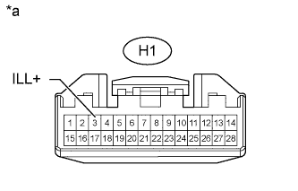

AUDIO AND VISUAL SYSTEM (w/ Multi-display) > Illumination Circuit |
| 1.CHECK ILLUMINATION |
Check if the illumination for the radio receiver assembly, heater control switch or others (hazard switch, transmission control switch, etc.) comes on when the light control switch is turned to the head or tail position.
| Result | Proceed to |
| Illumination comes on for all components except radio receiver assembly | A |
| No illumination comes on (radio receiver assembly, hazard switch, heater control switch, etc.) | B |
|
| ||||
| A | |
| 2.CHECK HARNESS AND CONNECTOR (BATTERY - RADIO RECEIVER ASSEMBLY) |
|  |
Disconnect the H1 radio receiver assembly connector.
Measure the voltage according to the value(s) in the table below.
| Tester Connection | Switch Condition | Specified Condition |
| H1-3 (ILL+) - Body ground | Light control switch tail or head | 11 to 14 V |
| *a | Front view of wire harness connector (to Radio Receiver Assembly) |
|
| ||||
| OK | |
| 3.CHECK HARNESS AND CONNECTOR (RADIO RECEIVER - COMBINATION METER) |
Disconnect the H1 radio receiver assembly connector.
Disconnect the G3 combination meter assembly connector.
Measure the resistance according to the value(s) in the table below.
| Tester Connection | Condition | Specified Condition |
| H1-17 (ILL-) - G3-3 (ILL-) | Always | Below 1 Ω |
| H1-17 (ILL-) - Body ground | Always | 10 kΩ or higher |
|
| ||||
| OK | ||
| ||